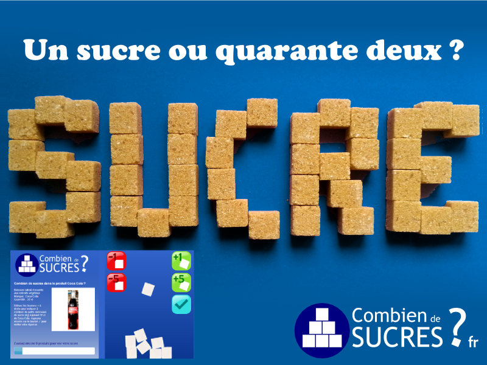

Pourquoi ce jeu ?
« Combien de sucres ? » permet d'apprendre à estimer la quantité de sucre contenue dans les produits alimentaires courants : boissons, jus de fruits, sodas, yaourts, crèmes glacées, céréales, pâtes à tartiner, sauces, etc.
La comparaison visuelle avec la quantité équivalente de morceaux de sucre (un petit morceau standard = 4 g) permet à tous, y compris aux enfants, de mieux se rendre compte du sucre présent dans les aliments qu'ils consomment. Par exemple, une canette de soda de 33 cl contient souvent l'équivalent de 9 petits morceaux de sucre, dépassant à elle seule la recommandation idéale de l'OMS (25 g de sucres libres par jour).
Sucres simples et recommandations
La teneur en sucre utilisée dans le jeu est celle indiquée sur les étiquettes des produits dans le tableau nutritionnel : il s'agit de la ligne « dont sucres » dans la partie « Glucides ». En pratique, il s'agit des sucres simples (comme le saccharose, le glucose, le fructose, le lactose et le maltose).
Vous pouvez basculer à tout moment entre la quantité pour tout le produit (ou portion courante) et la valeur pour 100 g / 100 ml afin de comparer facilement les produits entre eux.
Source des données : Open Food Facts
Les données sur les produits et les photos proviennent de la base collaborative libre et ouverte Open Food Facts. Les données sont disponibles sous la licence ouverte Open Database License (ODbL) et les photos sous licence Creative Commons Attribution Partage à l'identique. Les marques citées appartiennent à leurs propriétaires respectifs.
La base de données étant constituée de manière collaborative, vous pouvez utiliser l'onglet « Chercher / Tester » en haut de page pour interroger en direct Open Food Facts avec n'importe quel produit ou code-barres !
Remerciements & Crédits
Un grand merci à tous les contributeurs d'Open Food Facts qui collectent les informations sur les produits alimentaires et les rendent disponibles pour tous. Rejoignez-nous !
Merci aussi à Bertrand, Nicolas et Emmanuel pour leurs remarques et suggestions, ainsi qu'à Erin Catto pour le moteur de simulation physique Box2D.
Le jeu « Combien de sucres ? » a été créé par Stéphane Gigandet. Contact : stephane@combiendesucres.fr

Pour en savoir plus sur ce que l'on mange…
Rejoignez Open Food Facts pour décrypter les étiquettes, connaître le Nutri-Score, le groupe NOVA d'ultra-transformation et l'Eco-Score des aliments.